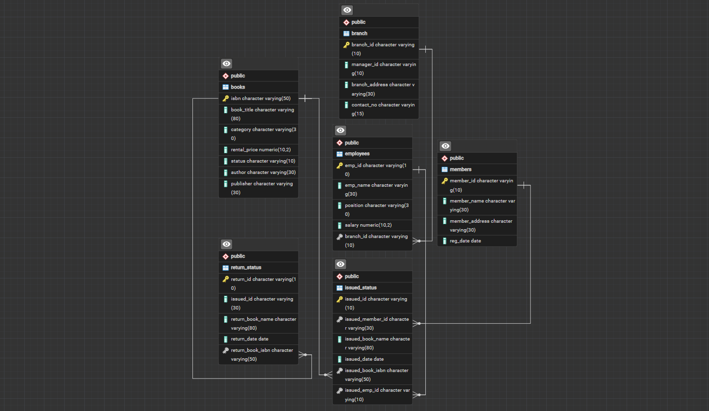

Library Management
SQL Project
Project Overview
This SQL project focuses on building and analyzing a Library Management System using PostgreSQL. The project covers database design, CRUD operations, data analysis, joins, CTAS statements, advanced SQL queries, and a stored procedure for managing book status.

Project Objective
The objective of this project is to create a relational database for managing library branches, employees, members, books, issued books, and returned books. The database is then used to perform different operational and analytical tasks using SQL.
Database Structure
The database consists of six main tables that represent the different components of the library system.
| Table | Main Purpose |
|---|---|
| branch | Stores library branch information. |
| employees | Stores employee and branch information. |
| members | Stores registered library members. |
| books | Stores books, categories, authors, and rental prices. |
| issued_status | Tracks books issued to members. |
| return_status | Tracks returned books. |
CRUD Operations
01. Create a New Book Record
Add a new book to the library database.
INSERT INTO books
(isbn, book_title, category, rental_price, status, author, publisher)
VALUES
('978-1-60129-456-2',
'To Kill a Mockingbird',
'Classic',
6.00,
'yes',
'Harper Lee',
'J.B. Lippincott & Co.');02. Update Member Information
Update the address of an existing library member.
UPDATE members
SET member_address = '125 Main St'
WHERE member_id = 'C101';03. Delete an Issued Book Record
Remove a specific record from the issued status table.
DELETE FROM issued_status
WHERE issued_id = 'IS107';Data Analysis
04. Members Who Issued More Than One Book
SELECT
issued_member_id,
COUNT(*) AS total_books
FROM issued_status
GROUP BY issued_member_id
HAVING COUNT(*) > 1;05. Total Rental Income by Category
SELECT
category,
SUM(rental_price) AS total_rental_income
FROM books
GROUP BY category;06. Employees and Branch Managers
Retrieve employees together with their branch and branch manager information.
SELECT
e.emp_id,
e.emp_name,
e.position,
e.salary,
b.branch_id,
b.branch_address,
b.contact_no,
m.emp_name AS manager_name
FROM employees e
JOIN branch b
ON e.branch_id = b.branch_id
JOIN employees m
ON b.manager_id = m.emp_id;CTAS Operations
The project also uses CREATE TABLE AS SELECT (CTAS) to create summary tables from query results.
07. Book Issue Summary
CREATE TABLE book_issued_summary AS
SELECT
issued_book_name,
COUNT(*) AS book_issued_cnt
FROM issued_status
GROUP BY issued_book_name;Advanced SQL Operations
08. Identify Members with Overdue Books
Identify members who have books that have not been returned within the assumed 30-day return period.
SELECT
m.member_name,
b.book_title,
i.issued_date,
CURRENT_DATE - i.issued_date AS days_overdue
FROM members m
JOIN issued_status i
ON m.member_id = i.issued_member_id
JOIN books b
ON i.issued_book_isbn = b.isbn
LEFT JOIN return_status r
ON i.issued_id = r.issued_id
WHERE r.return_id IS NULL
AND CURRENT_DATE - i.issued_date > 30;09. Branch Performance Report
Generate a branch-level report showing books issued, books returned, and rental revenue.
SELECT
br.branch_id,
br.branch_address,
COUNT(DISTINCT i.issued_id) AS books_issued,
COUNT(DISTINCT r.return_id) AS books_returned,
COALESCE(SUM(b.rental_price), 0) AS total_revenue
FROM branch br
LEFT JOIN employees e
ON br.branch_id = e.branch_id
LEFT JOIN issued_status i
ON e.emp_id = i.issued_emp_id
LEFT JOIN books b
ON i.issued_book_isbn = b.isbn
LEFT JOIN return_status r
ON i.issued_id = r.issued_id
GROUP BY
br.branch_id,
br.branch_address;10. Top 3 Employees by Book Issues
Find the three employees who processed the highest number of book issues.
SELECT
e.emp_name,
COUNT(i.issued_id) AS books_processed,
e.branch_id
FROM employees e
JOIN issued_status i
ON e.emp_id = i.issued_emp_id
GROUP BY
e.emp_id,
e.emp_name,
e.branch_id
ORDER BY books_processed DESC
LIMIT 3;Stored Procedure
The project also includes a stored procedure designed to manage the availability status of books based on whether they are issued or returned.
The procedure updates the book status depending on the issuance or return operation.
SQL Skills Demonstrated
- Database Design
- Primary & Foreign Keys
- CRUD Operations
- INSERT / UPDATE / DELETE
- SELECT & Filtering
- GROUP BY & HAVING
- Aggregate Functions
- INNER JOIN
- LEFT JOIN
- Subqueries
- CTAS
- COALESCE()
- Date & Time Analysis
- Stored Procedures
Project Outcome
This project demonstrates the ability to design a relational database and use SQL to perform operational tasks and analytical queries. It combines database structure, data manipulation, joins, aggregation, advanced queries, and procedural SQL into a complete Library Management System.
⬅ Back to Projects